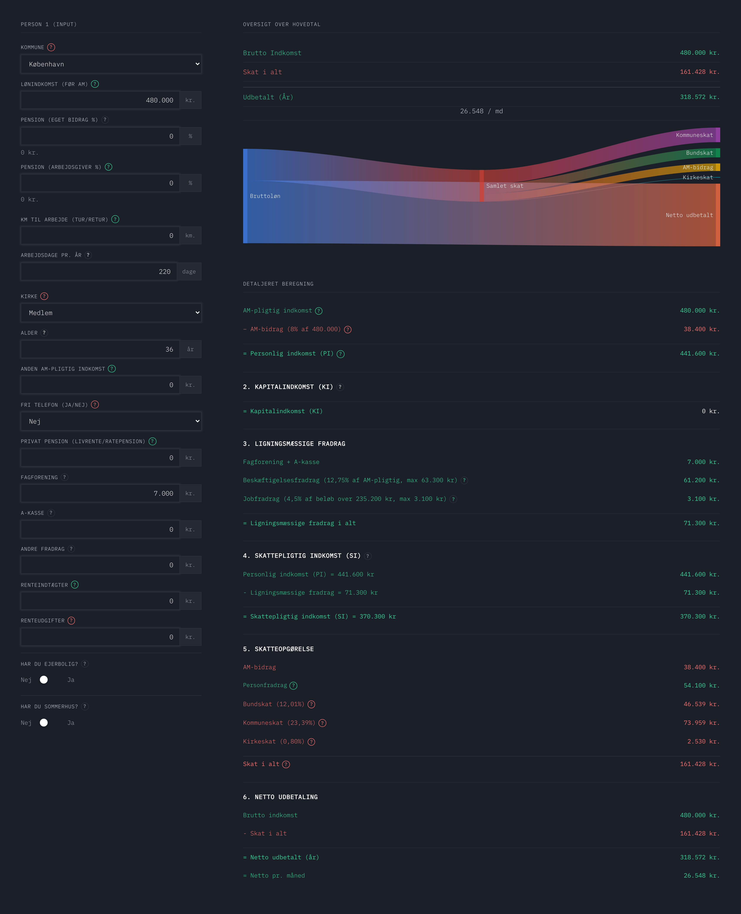
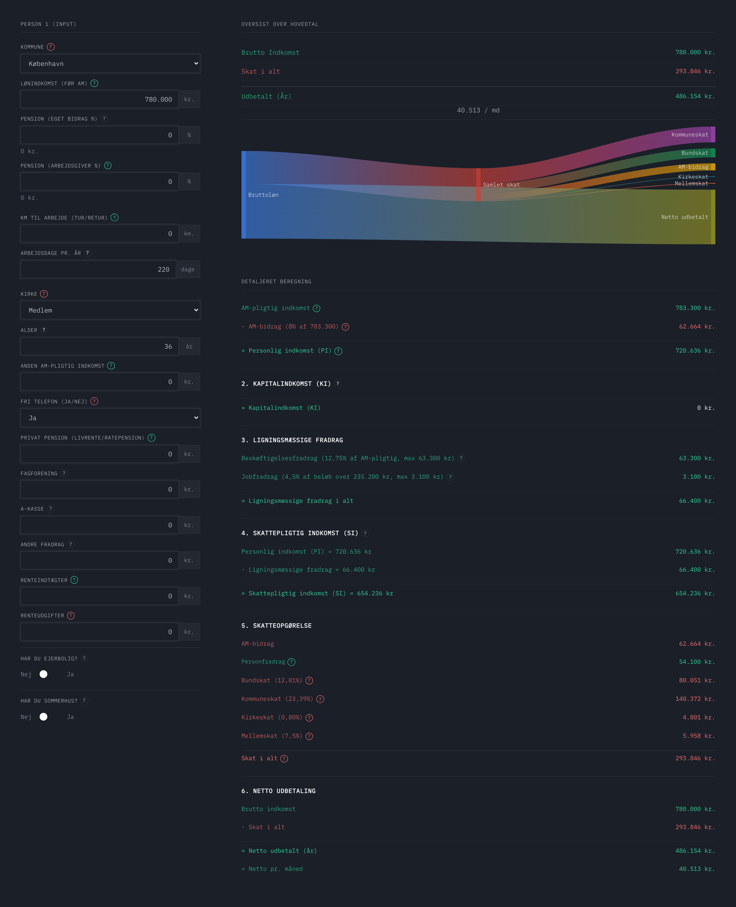
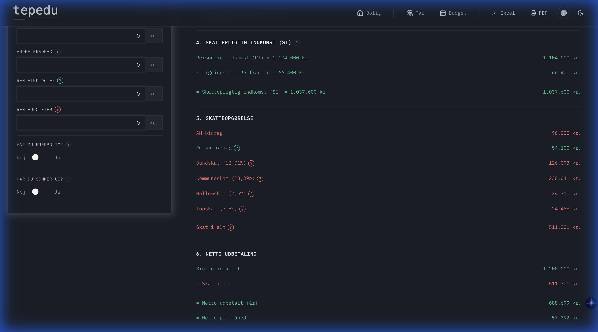
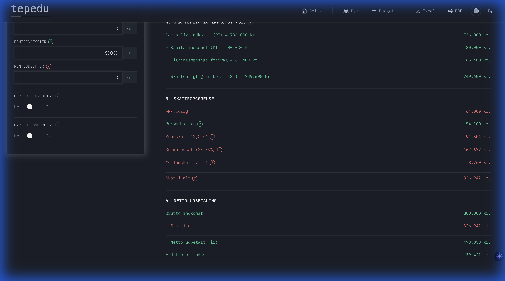

1. Skattesystemet 2026
Det danske skattesystem er ikke blot fundamentet for en af verdens mest udbyggede velfærdsstater; det er også et historisk kompromis mellem lighed og vækst. Politisk har skattesystemet altid været en central kampplads mellem ønsket om social omfordeling og behovet for at sikre, at det kan betale sig at arbejde og investere.
Siden "Systemskiftet" i 1903, hvor man indførte den moderne indkomstskat, har systemet gennemgået adskillige skattereformer, der hver især afspejler tidens økonomiske udfordringer. Dette kapitel introducerer det danske skattesystem i 2026 efter den mest omfattende reform i nyere tid.
Reformen markerer et skifte fra et to-strenget system (bund/top) til et fire-strenget system (bund/mellem/top/top-top). Det er et politisk forsøg på at øge arbejdsudbuddet ved at sænke den marginale skat for mellemgrupperne, samtidig med at man i toppen indfører en "top-topskat" for at opretholde balancen i omfordelingen. For den økonomiske rådgiver er det afgørende at mestre disse ændringer for at kunne optimere kundens disponible indkomst og pensionsopsparing.
1.1 Historisk oversigt: Udviklingen i skattesystemet
Udviklingen i det danske skattesystem afspejler transformeringen fra et landbrugssamfund til en moderne industristat og siden et vidensamfund. Herunder ses de vigtigste milepæle i skattehistorien:
| År | Reform / Begivenhed | Politisk baggrund | Strategisk fokus | Økonomisk betydning |
|---|---|---|---|---|
| 1903 | Systemskiftet | Venstre (Deuntzer) | Lighed & Modernisering | Systemskiftet markerer overgangen til parlamentarisme og indførelsen af moderne indkomstskat, hvor man beskattes af det man tjener, frem for det man ejer. Beskatningen flyttes fra jordbesiddelse til personlig indkomst. |
| 1967 | Moms indføres | S (Jens Otto Krag) | Finansiering af velfærd | Indførelse af merværdiafgift (moms) på 10% (i dag 25%). Flytter skatten fra arbejde mod forbrug. |
| 1970 | Kildeskatten | S (Hilmar Baunsgaard*) | Effektivisering | Skat tilbageholdes nu direkte i lønnen. Massive investeringer i digitalisering af skattevæsenet. |
| 1987 | Kartoffelkuren | K-V (Schlüter) | Opsparing & Gældspleje | Stort opgør med rentefradraget. Formålet var at stoppe privat overforbrug og nedbringe landets gæld efter en periode med massive underskud på betalingsbalancen. |
| 1994 | AM-bidrag | S-RV-CD (Nyrup) | Arbejdsmarked | En flad bruttoskat på 8 % indføres uden personfradrag. AM-bidraget finansierer bl.a. statens udgifter til ledigheds- og aktiveringsindsatser. |
| 1998 | Pinsepakken | S-RV (Nyrup) | Miljø & Bolig | Yderligere reduktion af rentefradraget og indførelse af grønne afgifter for at styre økonomien og miljøet i en mere bæredygtig retning. |
| 2002 | Skattestoppet | V-K (Fogh) | Forudsigelighed | Ingen skat eller afgift må stige. Ejendomsværdiskatten fastlåses i kroner og ører, hvilket skabte stor friværdi for boligejere i de efterfølgende årtier. |
| 2009 | Forårspakke 2.0 | V-K (Løkke) | Arbejdsudbud | Mellemskatten afskaffes og topskattesatsen sænkes for at styrke incitamentet til at yde en ekstra indsats på arbejdsmarkedet. |
| 2012 | Skatteaftale | S-RV (Thorning) | Konkurrenceevne | Markant forhøjelse af topskattegrænsen og beskæftigelsesfradraget for at gøre det mere attraktivt for mellemgrupperne at arbejde mere. |
| 2026 | SVM-reformen | S-V-M (Frederiksen) | Balance & Dynamik | Nyt fire-strenget system. Mellemskat genindføres, og en ny top-topskat (top-topskat) indføres for de allerhøjeste indkomster over 2,6 mio. kr. |
1.2 Nøgletal for det danske skattesystem
Hurtigt overblik: De forskellige skatter i 2026
Herunder ses en oversigt over de vigtigste skattetyper i 2026 med eksempler. Det nye fire-strengede system har markant ændret strukturen for indkomstskat:
| Skattetype | Kort forklaring | Eksempel (2026) |
|---|---|---|
| AM-bidrag | En flad skat på 8 % af al arbejdsindkomst. Trækkes som det første direkte fra bruttolønnen. | Af en bruttoløn på 40.000 kr. betales der først 8 % (3.200 kr.) i AM-bidrag, før der beregnes andre skatter. |
| Kommuneskat | Lokal skat til din bopælskommune (i gennemsnit ca. 25,0 %). Satsen varierer fra kommune til kommune. | I en gennemsnitskommune betales der 25 % i kommuneskat af den skattepligtige indkomst. |
| Kirkeskat | Frivillig lokal skat for medlemmer af Folkekirken (ofte omkring 0,4-1,3 %). | For folkekirkemedlemmer med en kirkeskat på 0,8 % tillægges dette beløb til kommuneskatten. |
| Bundskat | Statsskat (12,01 %) af personlig indkomst. Betales af den del, der overstiger det årlige personfradrag (54.100 kr.). | Med en indkomst på 200.000 kr. betales der kun bundskat
af de 145.900 kr., der ligger
over personfradraget. Marginalskatten er her ca. 42,8 % (forudsat ca. 25,8 % lokal skat). |
| Mellemskat (NY) | Ekstra statsskat (7,5 %) af al personlig indkomst (efter AM-bidrag), der overstiger 641.200 kr. Skatten fortsætter for al indkomst derover. | Med en indkomst på 700.000 kr. betales der 7,5 % i mellemskat
af de 58.800 kr.,
som ligger over mellemskattegrænsen.
Marginalskatten springer her til ca. 49,7 %. |
| Topskat | Yderligere statsskat (7,5 %) der lægges oven i mellemskatten for personlig indkomst over 777.900 kr. (Samlet tillæg på 15 %). | Med 900.000 kr. i indkomst betales der yderligere 7,5 % oven i mellemskatten
(samlet 15 % tillæg)
af de 122.100 kr. over topskattegrænsen. Marginalskatten springer her til ca. 56,6 %. |
| Top-topskat (NY) | Ekstra lag statsskat (5,0 %) for personlig indkomst på over 2.592.700 kr. | En person med 3 mio. kr. i indkomst betaler ekstra 5 % oven i topskatten (samlet
20 % tillæg) af
beløbet over top-topskattegrænsen. Marginalskatten lander her på ca. 60,5 % (begrænset af det skrå skatteloft, dog kan kirkeskat få den lidt højere). |
| Aktieskat | Skat af aktieudbytte og -gevinster. Satsen er 27 % op til 79.400 kr., hvorefter den stiger til 42 %. | Af 10.000 kr. i udbytte fra aktier, trækkes der automatisk 27 % (2.700 kr.) i udbytteskat før udbetalingen. |
| Kapitalskat | Skat af kapitalindkomst (fx renteindtægter). Satsen varierer (f.eks. ca. 37 % til ca. 42 %) afhængig af indkomst. | Ved 10.000 kr. i renteindtægter vil skatten heraf typisk udgøre 37–42 %, som betales via årsopgørelsen. |
| Ejendomsskat | Boligejere betaler grundskyld af grundens værdi og ejendomsværdiskat af selve boligens værdi. | Ejer du fast ejendom, beregnes disse skatter ud fra ejendomsvurderingen og opkræves via din forskudsopgørelse. |
Nøgletal for systemet
De følgende nøgletal tegner et billede af det danske skattesystem i 2026. Tallene afspejler både finansieringen af velfærdsstaten og de seneste reformer, der sigter mod at balancere arbejdsudbud og social lighed.
| Nøgletal | Værdi (2026) | Forklaring | Kilde |
|---|---|---|---|
| Personskatter (I alt) | 543 mia. kr. | De samlede indtægter fra indkomstskatter og ejendomsskatter. | DST (2024) |
| Skattetryk (% af BNP) | 46,3% | Skatteindtægternes andel af det samlede bruttonationalprodukt. | Eurostat (2023) |
| Moms (Standard) | 25% | Merværdiafgift på de fleste varer og tjenesteydelser i Danmark. | Skattestyrelsen |
| AM-bidrag | 8,0% | Bruttoskat der betales af al lønindkomst før andre fradrag. | Personskatteloven |
| Skatteloft (inkl. top-top) | 57,07 % | Den maksimale marginalskat for personlig indkomst ekskl. kirkeskat. | Skatteministeriet |
| Personfradrag (>18 år) | 54.100 kr. | Det beløb man kan tjene om året uden at betale indkomstskat. | Skatteministeriet |
| Beskæftigelsesfradrag (maks) | 63.300 kr. | Et automatisk fradrag for alle der er i beskæftigelse. | Skatteministeriet |
| Topskatteydere (estimat) | ca. 285.000 | Antal personer der forventes at tjene over 777.900 kr. (efter AM). | SKM (Estimat) |
| Top-topskatteydere (estimat) | ca. 9.000 | Den begrænsede gruppe der rammes af den nye top-topskat. | SKM (Estimat) |
1.3 Centrale emner
- Hovedemner: Skattereformen 2026, AM-bidrag, de fire skattetrin, marginalskat, personfradrag, kapitalindkomst
- Vigtige begreber: Personlig indkomst, skatteloft, aktiesparekonto, rentefradrag
- Praktisk anvendelse: Skatteberegning, optimering af indkomst og pension
1.4 Indledning: Hvorfor skattereformen 2026?
Skattereformen blev vedtaget med følgende tre hovedformål:
- Øge arbejdsudbuddet: Ved at hæve topskattegrænsen og indføre mellemskat skulle flere have incitament til at arbejde mere og tage overarbejde.
- Finansiere velfærden: Top-topskatten sikrer, at de allerhøjeste indkomster bidrager mere til fællesskabet.
- Modernisere skattestrukturen: Systemet blev tilpasset med fire klarere trin, der bedre afspejler den moderne indkomstfordeling.
I 2024 udgjorde de samlede skatteindtægter fra personer 543,0 mia. kr., en stigning på 5,8% fra året før. Kommuneskatten udgjorde 317,1 mia. kr., mens AM-bidraget indbragte 114,4 mia. kr. til statskassen.
1.4.1 Skatteindtægternes sammensætning
Nedenstående diagram viser fordelingen af de samlede personskatter i Danmark. Kommuneskatten er den klart største komponent og finansierer lokale services som skoler, ældrepleje og infrastruktur.
Sådan læses figuren: Doughnut-diagrammet viser, hvordan de samlede personskatter på 543 mia. kr. fordeler sig mellem de forskellige skattetyper. Hver "skive" repræsenterer en skattetype, og størrelsen svarer til dens andel af de samlede indtægter.
- Kommuneskat (317,1 mia. kr.): Den klart største komponent — over halvdelen af alle personskatter. Kommuneskatten finansierer lokale ydelser som folkeskoler, hjemmepleje, børnepasning og lokal infrastruktur. Satsen varierer fra kommune til kommune (f.eks. 22,8% i Gentofte mod 27,8% på Langeland).
- AM-bidrag (114,4 mia. kr.): Den næststørste post. Alle lønmodtagere betaler 8% af deres bruttoløn, uanset indkomstniveau. Eksempel: En person med 500.000 kr. i bruttoløn bidrager med 40.000 kr., mens en med 1 mio. kr. bidrager med 80.000 kr.
- Bundskat, topskat og øvrige: De resterende skiver dækker statslige skatter. Bundskatten (12,01%) rammer alle over personfradraget, mens topskatten kun rammer de ca. 285.000 danskere med personlig indkomst over 777.900 kr.
Kirkeskat: Kirkeskatten indgår ikke som en separat skive i dette diagram, da den er en del af den kommunale opkrævning og kun betales af medlemmer af folkekirken (ca. 72% af befolkningen). Kirkeskatten udgør typisk 0,4–1,3% afhængigt af kommune.
Sådan læses figuren: Tidslinjen viser udviklingen i de samlede skatteindtægter fra personskatter over de seneste 6 år. Det stablede areal viser, hvordan de enkelte skattetyper (kommuneskat, AM-bidrag, bundskat osv.) hver for sig bidrager til den samlede vækst.
- Stabil vækst: De samlede skatteindtægter er steget fra ca. 480 mia. kr. til 543 mia. kr. på 6 år — en stigning på ca. 13%. Stigningen skyldes primært højere beskæftigelse (flere skatteydere) og lønstigninger (højere skattepligtig indkomst per person).
- Kommuneskat dominerer: I alle år udgør kommuneskatten det klart største areal. Det afspejler, at kommunerne opkræver den største enkeltskat. Eksempel: Når beskæftigelsen stiger med 50.000 personer, øger det kommunale skatteindtægter med ca. 8-10 mia. kr.
- AM-bidrag vokser stabilt: Da AM-bidraget er en fast procentsats (8%) af al lønindkomst, stiger det direkte i takt med den samlede lønsum i Danmark.
Bemærk: Kirkeskatten indgår ikke separat i denne tidslinje, da den opkræves sammen med kommuneskatten.
1.5 Arbejdsmarkedsbidraget (AM-bidrag)
AM-bidraget er den første skat, der trækkes fra bruttolønnen. Det er en "flad" skat, hvilket betyder, at alle betaler samme procentsats uanset indkomst. Til forskel fra indkomstskatten er AM-bidraget ikke progressivt — en direktør og en butiksassistent betaler begge præcis 8%. AM-bidraget finansierer bl.a. dagpenge, efterløn, aktivering og andre arbejdsmarkedsrelaterede udgifter.
1.5.1 Beregning af AM-bidrag
Satsen for AM-bidrag er 8,00% af bruttoindkomsten. Dette gælder både for 2025 og 2026.
| Bruttoindkomst | AM-bidrag (8%) | Personlig indkomst |
|---|---|---|
| 300.000 kr. | 24.000 kr. | 276.000 kr. |
| 500.000 kr. | 40.000 kr. | 460.000 kr. |
| 750.000 kr. | 60.000 kr. | 690.000 kr. |
| 1.000.000 kr. | 80.000 kr. | 920.000 kr. |
- Bruttoskat: AM-bidraget er en fast skat på 8 % af al lønindkomst.
- Beregningsgrundlag: Trækkes før alle andre skatter og fradrag.
- Anvendelse: Finansierer bl.a. dagpenge, efterløn og beskæftigelsesindsats.
1.5.2 Særregel for unge under 18 år (2026)
Fra 2026 er unge under 18 år fritaget for AM-bidrag. Dette gælder til og med det år, den unge fylder 17 år. Formålet er at gøre det mere attraktivt for unge at tage fritidsjobs. I praksis betyder det, at en 16-årig med et fritidsjob beholder 8 % mere af sin løn end en voksen i samme stilling. Samtidig har unge under 18 år nu præcis det samme personfradrag som voksne (54.100 kr. i 2026), hvilket gør deres skattevilkår meget gunstige.
1.6 De fire skattetrin i 2026
Det nye skattesystem opererer med fire trin i den statslige beskatning. Hertil kommer kommuneskat (gennemsnitligt 25,0 % i 2026) og evt. kirkeskat.
| Skattetype | Sats | Indkomstgrænse (efter AM-bidrag) |
|---|---|---|
| Bundskat | 12,01% | Fra 54.100 kr. (Personfradrag) |
| Mellemskat (NY) | 7,5% | Over 641.200 kr. |
| Topskat | 7,5% | Over 777.900 kr. |
| Top-topskat (NY) | 5,0% | Over 2.592.700 kr. |
- Bundskat (12,01 %): Betales af indkomst over personfradraget (54.100 kr.).
- Mellemskat (7,5 %): Ny i 2026, betales af indkomst over 641.200 kr.
- Topskat (7,5 %): Betales af indkomst over 777.900 kr. (samlet tillæg 15 %).
- Top-topskat (5,0 %): Ny i 2026, betales af indkomst over 2.592.700 kr. (samlet tillæg 20 %).
Bemærk: Alle indkomstgrænser er angivet i 2026-niveau. Grænserne reguleres årligt efter personskatteloven.
1.6.1 Sammenligning: Gammelt vs. nyt system
Nedenstående figur sammenligner det gamle to-strengede skattesystem (2025) med det nye fire-strengede system (2026).
Figur 1.3 — Kilde: SkatteministerietSådan læses figuren: Søjlediagrammet sammenligner den effektive skatteprocent (samlet skat i % af bruttoindkomst) i det gamle 2025-system (grå søjler) med det nye 2026-system (blå søjler) ved forskellige indkomstniveauer.
- Lavere skat for mellemindkomster: Ved f.eks. 700.000 kr. i bruttoindkomst er den effektive skat faldet fra ca. 38 % til ca. 36 % — en besparelse på ca. 14.000 kr. årligt. Det skyldes, at den gamle topskat slog ind ved en lavere grænse, mens det nye mellemskat-trin har en lavere sats (7,5 %).
- Uændret for lave indkomster: Ved 300.000-500.000 kr. er der ingen mærkbar forskel, da disse indkomster kun betaler bundskat og kommuneskat i begge systemer.
- Højere skat i toppen: Ved indkomster over 2,8 mio. kr. er den effektive skat steget, fordi den nye top-topskat (5 %) lægges oveni. Eksempel: Ved 3,5 mio. kr. stiger den effektive skat fra ca. 52 % til ca. 54 %.
Kirkeskat: Figuren er beregnet uden kirkeskat. Inkluderes kirkeskat (typisk 0,4-1,3 %), stiger den effektive skatteprocent med ca. 0,3-1,0 procentpoint afhængigt af kommune. Beregningen anvender en gennemsnitlig kommuneskat på 25,0 %.
1.7 Marginalskat og skatteloft
Marginalskatten er den skat, der betales af den sidst tjente krone. Det er et centralt begreb i skatteoptimering, fordi den viser, hvor stor en andel af en ekstra tjent krone der afleveres til beskatning. Marginalskatten påvirker direkte beslutninger om overarbejde, lønforhandling og pensionsindbetalinger.
1.7.1 Beregning af marginalskat
| Indkomstniveau | Marginalskat (ekskl. kirkeskat) | Forklaring |
|---|---|---|
| Under 641.200 kr. | ~42,0 % | AM-bidrag (8 %) + bundskat + kommuneskat |
| 641.200 – 777.900 kr. | ~49,0 % | + mellemskat (7,5 %) |
| 777.900 – 2.592.700 kr. | ~56,0 % | + topskat (7,5 %) |
| Over 2.592.700 kr. | ~60,5 % | + top-topskat (5,0 %) |
- Beregning: Satserne inkluderer AM-bidrag (8 %), bundskat (12,01 %) og gennemsnitlig kommuneskat (25,0 %). Se Figur 1.4 herunder for den præcise formel.
- Niveauer: Marginalskatten springer i trin: ~42 % → ~49 % → ~56 % → ~60,5 %. Springene sker ved mellemskattegrænsen (641.200 kr.), topskattegrænsen (777.900 kr.) og top-topskattegrænsen (2.592.700 kr.).
- Praktisk eksempel: En person med PI på 700.000 kr. har marginalskat ~49 %. Tjener vedkommende 1.000 kr. ekstra, betaler vedkommende 490 kr. i skat og beholder 510 kr.
- Kirkeskat: Tabellen er beregnet ekskl. kirkeskat. Kirkeskatten (0,4-1,3 %) tillægges for folkekirkemedlemmer og øger marginalskatten med ca. 0,4-1,2 procentpoint (da kirkeskatten ganges med faktoren 0,92 pga. AM-bidraget).
1.7.2 Marginalskat ved stigende indkomst
Figuren viser, hvordan marginalskatten udvikler sig i trin ved stigende indkomst. Bemærk de tydelige "trin" ved hver skattegrænse, hvor marginalskatten springer op:
Figur 1.4 — Kilde: SkatteministerietSådan fremkommer marginalskattesatserne i figuren:
Marginalskatten
beregnes som AM-bidrag
(8 %) plus de øvrige skatter ganget med faktoren
0,92
(da skatterne beregnes af indkomsten efter AM-bidrag).
Formlen er:
Marginalskat = 8 + 0,92 × (bundskat + kommuneskat + evt. mellemskat + evt. topskat + evt. top-topskat)
- Trin 1 — Under 641.200 kr. (PI): 8 + 0,92 × (12,01 + 25,0) = 8 + 0,92 × 37,01 = 8 + 34,05 = ~42,0 %
- Trin 2 — 641.200–777.900 kr. (PI): 8 + 0,92 × (37,01 + 7,5) = 8 + 0,92 × 44,51 = 8 + 40,95 = ~49,0 %
- Trin 3 — 777.900–2.592.700 kr. (PI): 8 + 0,92 × (44,51 + 7,5) = 8 + 0,92 × 52,01 = 8 + 47,85 = ~55,9 %
- Trin 4 — Over 2.592.700 kr. (PI): 8 + 0,92 × (52,01 + 5,0) = 8 + 0,92 × 57,01 = 8 + 52,45 = ~60,5 %
PI = personlig indkomst (bruttoløn efter 8 % AM-bidrag). Kommuneskatten er sat til gennemsnitligt 25,0 %.
Eksempel fra figuren: En person med en bruttoindkomst på 900.000 kr. har en PI på 828.000 kr. (900.000 × 0,92). Da 828.000 kr. overstiger topskattegrænsen på 777.900 kr., aflæses marginalskatten til ca. 55,9 % i figuren. Det betyder, at af den næste krone denne person tjener, går 55,9 øre til skat og 44,1 øre til personen selv.
Kirkeskat: Figuren er beregnet uden kirkeskat. Er man medlem af folkekirken, tillægges kirkeskatten (typisk 0,4–1,3 %) oven i de viste satser. Eksempel: Med en kirkeskat på 0,80 % stiger marginalskatten i trin 3 fra ~55,9 % til ~56,6 % (da 0,92 × 0,80 = 0,74 procentpoint lægges til).
1.7.3 Det skrå skatteloft
Det skrå skatteloft fungerer som en form for "nødbremse", der sikrer, at den samlede marginalskat (ekskl. kirkeskat og AM-bidrag) aldrig overstiger en fastsat procentsats. Fra 2026 er dette loft trindelt, så det stiger i takt med indkomsten.
Hvorfor har vi loftet? Forestil dig en person, der bor i en kommune med en meget høj kommuneskat (f.eks. Langeland med 27,8 %). Uden loftet ville deres samlede skat af den sidst tjente krone blive uforholdsmæssigt høj sammenlignet med en person i en lavskattekommune (f.eks. Gentofte med 22,8 %). Loftet sikrer geografisk lighed: Hvis din kommuneskat er høj, "giver staten rabat" på deres del af skatten, så du aldrig betaler mere end det gældende loft for dit indkomsttrin.
Satser og den reelle marginalskat (2026):
| Skattetrin | Loft (ekskl. AM-bidrag) | Reel marginalskat (inkl. AM-bidrag) |
|---|---|---|
| Op til mellemskat | 44,57 % | ~ 49,0 % |
| Topskat | 52,07 % | ~ 55,9 % |
| Top-topskat | 57,07 % | ~ 60,5 % |
Hvorfor er den reelle skat højere end loftet? Det skyldes, at man altid betaler 8 % i
AM-bidrag først, og dette tæller ikke med i
selve loftet. Regnestykket for en person i top-topskat ser således ud:
8 % (AM-bidrag) + (92 % resterende × 57,07 % loft) ≈ 60,5 %
(Bemærk: I nogle eksempler kan den marginale skat lande på ca. 61,2 % pga. kirkeskat, som
heller ikke er omfattet af loftet).
Bemærk: Kirkeskat er aldrig inkluderet i disse lofter. Medlemmer af folkekirken skal typisk lægge ca. 0,7 % oveni den samlede beregning.
1.7.4 Kommuneskatter i Danmark: Alle 98 kommuner
Kommuneskatten varierer betydeligt mellem de 98 danske kommuner — fra 22,8 % i Gentofte til 27,8 % på Langeland. Nedenstående interaktive danmarkskort viser alle kommuner. Hold musen over kortet for at se detaljer om kommuneskat, kirkeskat, grundskyld, region og borgmesterparti.
Sådan læses kortet: Danmarkskortet er inddelt i de 98 kommuner. Farverne skifter gradvist fra grøn (lavest) over gul til rød (højest) for at visualisere kommuneskattesatsen. Tryk på zoom-knapperne for at se detaljer i tætbefolkede områder. Jo mørkere rød eller varm farve kommunen har, desto højere er skatten.
- Gentofte (22,8 %): Den kommune med den laveste kommuneskat i Danmark. Kombineret med lav kirkeskat (0,62 %) giver det en samlet kommunal skatteprocent på 23,42 %. Gentofte har et højt skatteindtægtsgrundlag pga. mange højindkomstfamilier.
- Langeland (27,8 %): Den højeste kommuneskat i Danmark — 5 procentpoint højere end Gentofte. For en person med 500.000 kr. i personlig indkomst svarer forskellen til ca. 23.000 kr. ekstra i kommuneskat årligt.
- Kirkeskat: Varierer fra 0,40 % (Hjørring) til 1,30 % (Læsø). Kirkeskatten betales kun af folkekirkemedlemmer (ca. 72 % af befolkningen) og tillægges kommuneskatten.
- Grundskyld: Ejendomsskatten varierer også betydeligt mellem kommunerne og påvirker især boligejere. Grundskylden angives i promille af ejendomsværdien.
Praktisk betydning: For skatteydere der overvejer at flytte mellem kommuner, kan forskellen i kommuneskat have stor økonomisk betydning. Eksempel: En person med 600.000 kr. i personlig indkomst betaler ca. 136.800 kr. i kommuneskat i Gentofte, men ca. 166.800 kr. på Langeland — en forskel på 30.000 kr. årligt.
1.7.5 Skatteværdi og fradragsværdi (2026)
I praksis arbejder rådgiveren ofte med to begreber, der let forveksles: fradragsværdi og skatteværdi. Fradragsværdien er selve procentsatsen, der viser, hvor stor en del af et fradragsberettiget beløb der "kommer igen" via lavere skat. I 2026 ligger fradragsværdien for almindelige ligningsmæssige fradrag typisk i intervallet ca. 25–33 % – lavest for små indkomster/kommuneskat og højest for negativ nettokapitalindkomst (fx renter) op til ca. 50.000 kr. (100.000 kr. for ægtepar). Skatteværdien er derimod det konkrete beløb i kroner, som kunden reelt sparer i skat.
| Situation (2026) | Fradragstype | Fradragsbeløb | Antaget fradragsværdi | Estimeret skatteværdi | Bemærkning |
|---|---|---|---|---|---|
| Gennemsnitlig lønmodtager | Fagforening / øvrigt ligningsmæssigt fradrag | 10.000 kr. | ≈ 25–26 % | ≈ 2.500–2.600 kr. | Typisk niveau ved almindelig kommune- og evt. kirkeskat. |
| Enlig med negativ nettokapitalindkomst under grænsen | Renteudgifter (negativ kapitalindkomst) | 50.000 kr. | ≈ 33 % | ≈ 16.500 kr. | Høj skatteværdi gælder kun op til ca. 50.000 kr. (100.000 kr. for ægtepar). |
| Enlig med store renteudgifter | Renteudgifter (negativ kapitalindkomst) | 100.000 kr. | ≈ 29 % i gennemsnit | ≈ 29.000 kr. | Ca. 33 % af de første 50.000 kr., ca. 25–26 % af de næste 50.000 kr. |
1.8 Indkomstfordeling i Danmark
For at forstå skattesystemets betydning er det vigtigt at kende indkomstfordelingen:
Figur 1.5 — Kilde: Danmarks Statistik (Tabel EJER12)Hvad er en decil? En decil er en opdeling af befolkningen i 10 lige store grupper (hver 10%), sorteret efter indkomst fra lavest til højest. 1. decil er de 10% af danskerne med den laveste disponible indkomst, mens 10. decil er de 10% med den højeste. Disponibel indkomst er det beløb, man har tilbage efter skat — altså hvad man reelt kan bruge til forbrug og opsparing.
Sådan læses figuren: Hver søjle viser den gennemsnitlige disponible indkomst for en decilgruppe. Farverne skifter fra blå (lavere indkomster) over gul til rød (højeste indkomster) for at markere, hvornår de forskellige skattetrin slår ind.
- 1. decil (101.200 kr.): De laveste 10% har i gennemsnit ca. 8.433 kr./md. til rådighed. Gruppen omfatter typisk studerende, deltidsansatte, førtidspensionister og kontanthjælpsmodtagere. Mange i denne gruppe betaler kun lidt eller ingen indkomstskat pga. personfradraget på 54.100 kr.
- 5. decil (310.000 kr.): Medianen — halvdelen af danskerne har mere, halvdelen har mindre. Det svarer til ca. 25.833 kr./md. og er typisk en faglært arbejder eller en offentligt ansat. Disse personer betaler kun bundskat og kommuneskat (marginalskat ~42 %).
- 8. decil (470.000 kr.): Ca. 39.167 kr./md. Denne gruppe nærmer sig mellemskattegrænsen, men de fleste rammes endnu ikke af mellemskat i 2026-systemet.
- 10. decil (853.000 kr.): De rigeste 10% har i gennemsnit ca. 71.083 kr./md. til rådighed. Denne gruppe betaler typisk topskat, da deres bruttoindkomst (før skat) ofte er over 1,0–1,5 mio. kr. Bemærk det store spring fra 9. decil (580.000 kr.) til 10. decil (853.000 kr.) — en forskel på 273.000 kr. — som illustrerer, at indkomstforskellene er størst i toppen.
Gennemsnittet (markeret med stiplet linje i figuren) er 339.500 kr. — højere end medianen (5. decil), fordi de højeste indkomster trækker gennemsnittet op.
Skattesystemets effekt: Figuren viser disponibel indkomst (efter skat). Det progressive skattesystem med højere marginalskat i toppen (op til 60,5 %) reducerer uligheden markant. Før skat er forskellen mellem 1. og 10. decil endnu større — skattesystemet og overførselsindkomsterne udjævner fordelingen betydeligt.
1.8.1 International sammenligning: Skattetryk og indkomst
Danmark har et af de højeste skattetryk i verden, men også en af de mest lige indkomstfordelinger. Boblediagrammet viser sammenhængen mellem skattetryk, BNP pr. indbygger og Gini-koefficient. Større bobler = mere ulighed.
Figur 1.6 — Kilde: OECD Revenue StatisticsSådan læses figuren: Boblediagrammet har tre dimensioner: x-aksen viser BNP pr. indbygger (velstand), y-aksen viser skattetryk (% af BNP), og boblernes størrelse viser Gini-koefficienten (ulighed). Jo større boble, desto mere ulige er indkomstfordelingen.
- Danmark (rød boble): Ligger øverst til højre med et skattetryk på 46,3% og BNP pr. indbygger på $67.800. Danmarks boble er lille (Gini 27,7), hvilket viser lav ulighed. Det illustrerer den "nordiske model": høje skatter finansierer velfærd, som reducerer ulighed, uden at det går ud over velstanden.
- USA (pink boble): Har højere BNP pr. indbygger ($76.300), men et langt lavere skattetryk (27,1%). Til gengæld er boblen stor (Gini 39,7) — USA har væsentligt mere ulighed end Danmark. Det viser, at et lavt skattetryk ikke nødvendigvis giver højere velstand, men ofte mere ulighed.
- Frankrig (gul boble): Har det højeste skattetryk (47,0%), men lavere BNP pr. indbygger ($42.300) end Danmark. Frankrig viser, at et højt skattetryk ikke automatisk giver høj velstand — det afhænger også af, hvordan pengene bruges.
- Norge (turkis boble): Har den højeste velstand ($82.800) trods et moderat skattetryk (39,2%). Norges olieindtægter gør det muligt at finansiere velfærd med lavere skattetryk.
Kirkeskat: Kirkeskatten indgår i skattetrykket som en del af de samlede skatteindtægter, men udgør kun en marginal andel (under 0,5 % af BNP).
1.8.2 Gini-koefficient: Ulighed i international sammenligning
Gini-koefficienten måler graden af ulighed i indkomstfordelingen. En Gini på 0 betyder perfekt lighed, mens 100 betyder total ulighed. De nordiske lande har blandt de laveste Gini-koefficienter i verden, hvilket afspejler de progressive skattesystemer og den universelle velfærdsmodel.
Sådan læses kortet: Verdenskortet markerer et udvalg af lande med henblik på at belyse uligheden og skattesystemerne i verden. Hold musen over et fremhævet land for at se landets Gini-koefficient for disponibel indkomst (indkomst efter skat og overførsler), skattetrykket (% af BNP) samt landets BNP pr. indbygger i USD. Jo mere grøn og "kold" farven er (f.eks. Danmark), desto mere lige indkomstfordeling. Over mod gul, orange og rød stiger landets ulighed og Gini-værdi markant.
- Danmark (Gini 27,7): Grøn på skalaen. Danmark har en forholdsvis lige indkomstfordeling, hvilket i høj grad skyldes det progressive skattesystem, høje overførselsindkomster og offentlig velfærd.
- USA (Gini 39,7): Mellemblå/lys farve og væsentligt over OECD-gennemsnittet på omkring 30. Gini-koefficienten trækkes op af lavere skattetryk og færre universelle ydelser.
- Nordiske lande (Gini 26-29): Sverige, Finland, Norge og Island ligger alle som grønne, lige samfund. Det bekræfter den nordiske models store udlignende effekt.
- Grønland (Gini 33,9): Grønland har særskilte skatter og indgår ikke én til én i Danmarks tal. Til trods for Rigsfællesskabet er uligheden noget større heroppe.
- Australien, New Zealand, Sydkorea & Japan (Gini 30-35): Disse asiatiske og oceaniske lande ligger tættere på europæiske niveauer, men uligheden er en smule højere end i de nordiske lande, delvist pga. lavere skattetryk generelt (ofte omkring 30%).
- Kina, Indien & Rusland (Gini 35-39): Disse vækstøkonomier har alle en større ulighed end OECD-gennemsnittet, ofte pga. forskelle mellem land/by.
- Sydamerika & Afrika: Mange befinder sig over 40 (og flere over 50), f.eks. Brasilien, Colombia, Namibia og Sydafrika. Det skyldes ofte dybe historiske uligheder, stor uformel økonomi og lavere omfordeling. Udover Sydafrika (63,0) skiller lande som Namibia (59,1) og Colombia (53,9) sig ekstremt ud.
Hvad måler Gini? En Gini på 0 ville betyde, at alle tjener det samme. En Gini på 100 ville betyde, at én person tjener alt. I praksis ligger de fleste lande mellem 23 og 65. Danmarks Gini på 27,7 er et resultat af den samlede omfordeling — herunder det progressive skattesystem, kirkeskatten (som bidrager marginalt til omfordelingen), og de universelle overførsler.
1.8.3 Skattestrømme: Fra bruttoløn til disponibel indkomst
Nedenstående flow-diagram viser, hvordan en bruttoløn på 700.000 kr. fordeles mellem de forskellige skattetyper, fradrag og den endelige disponible indkomst:
Figur 1.8 — Kilde: SkatteministerietSådan læses figuren: Sankey-diagrammet viser, hvordan en bruttoløn på 700.000 kr. "flyder" fra venstre mod højre og fordeles mellem de forskellige skatter og den endelige disponible indkomst. Bredden af hver strøm svarer til beløbets størrelse — en bredere strøm betyder et større beløb.
- AM-bidrag (56.000 kr.): Det første fradrag. 700.000 × 8 % = 56.000 kr. trækkes fra bruttolønnen. Den personlige indkomst bliver dermed 644.000 kr.
- Kommuneskat (den bredeste strøm): Med en gennemsnitlig kommuneskat på 25 % er dette den klart største enkeltpost. Kommuneskatten beregnes af den skattepligtige indkomst (PI minus fradrag).
- Bundskat (12,01 %): Den næststørste statslige skat, beregnet af den skattepligtige indkomst over personfradraget.
- Mellemskat: Da PI = 644.000 kr. lige netop overstiger mellemskattegrænsen på 641.200 kr., betales der kun mellemskat of de overskydende 2.800 kr. — dvs. blot 210 kr. (2.800 × 7,5 %). Denne strøm er næsten usynligt tynd i diagrammet.
- Disponibel indkomst (den grønne strøm): Det beløb, der er tilbage efter alle skatter — det personen reelt kan bruge.
Kirkeskat: Diagrammet er beregnet uden kirkeskat. For et folkekirkemedlem i f.eks. København (kirkeskat 0,80 %) ville der komme en ekstra strøm på ca. 4.700 kr., som ville reducere den disponible indkomst tilsvarende.
1.9 Skatteindtægter i EU-perspektiv
Danmark har det næsthøjeste skattetryk i EU (målt som andel af BNP), kun overgået af Frankrig. Til gengæld har Danmark lav ulighed, høj social mobilitet og en veludbygget velfærdsstat.
Sådan læses kortet: Europakortet viser det samlede skattetryk for europæiske lande (alle skatter og afgifter som andel af BNP). Farverne skifter via en gradient fra grøn (lavt skattetryk) til dyb rød og lilla (højt skattetryk) for at skabe et tydeligt visuelt overblik over skatteniveauet i Europa. Hold musen over et land for at aflæse detaljer om landets specifikke skattetryk.
- Danmark (46,3%): Har det næsthøjeste skattetryk i EU, kun overgået af Frankrig (47,0%). Til sammenligning: Hvis Danmarks BNP er ca. 2.850 mia. kr., svarer skattetrykket til ca. 1.320 mia. kr. i samlede skatteindtægter. Disse penge finansierer gratis sundhedsvæsen, uddannelse, dagpenge, folkepension og meget mere.
- Frankrig (47,0%): Det højeste skattetryk i EU, men med en anderledes sammensætning. Frankrig har høje sociale bidrag (arbejdsgiverbidrag til social sikring), mens Danmark i højere grad finansierer via direkte indkomstskatter og moms.
- Irland (~21,7%): Et af de laveste skattetryk i EU. Det skyldes bl.a. en lav selskabsskat (12,5%), som har tiltrukket mange multinationale virksomheder (Apple, Google, Meta). Til gengæld har Irland færre universelle velfærdsydelser end Danmark.
- EU-gennemsnit (40,2%): Danmark ligger ca. 6 procentpoint over gennemsnittet. Det ekstra skattetryk svarer til ca. 170 mia. kr. årligt — omtrent prisen for det gratis sundhedsvæsen.
Bemærk: Skattetrykket inkluderer alle skatter: personskatter, selskabsskat, moms, afgifter og kirkeskat. Kirkeskatten udgør en meget lille andel af det samlede skattetryk (under 0,5% af BNP).
1.9.1 Udvikling i det danske skattetryk
Det danske skattetryk har ligget stabilt højt de seneste årtier, men sammensætningen har ændret sig.
Figur 1.10 — Kilde: Danmarks StatistikSådan læses figuren: Linjegrafen viser, hvordan det danske skattetryk har udviklet sig over de seneste 24 år, opdelt på skattetyper. Den samlede linje viser det totale skattetryk, mens de individuelle linjer viser de enkelte komponenters udvikling.
- Personskatter falder: Personskatternes andel af BNP er faldet gradvist — fra ca. 26% til ca. 23% af BNP. Det skyldes bl.a. skattereformer (Forårspakke 2.0 i 2009, Skatteaftalen i 2012), der sænkede satser og hævede grænser for at øge arbejdsudbuddet.
- Moms og afgifter stabilt: De indirekte skatter (moms 25% og punktafgifter) er forblevet relativt stabile omkring 15-16% af BNP. Momsen rammer alt forbrug ensartet og er uafhængig af indkomstniveauet.
- Virksomhedsskatter stiger: Selskabsskat og andre virksomhedsrelaterede skatter er steget, delvist drevet af store virksomheders voksende overskud (Novo Nordisk, Mærsk, Vestas).
- Samlet stabilt: Trods forskydninger mellem skattetyperne er det samlede skattetryk forblevet i intervallet 45-48% af BNP. Når personskatter reduceres, kompenseres det af andre skattetyper.
Kirkeskat: Kirkeskatten indgår i "personskatter" i figuren. Dens andel er faldende, bl.a. fordi andelen af folkekirkemedlemmer falder (fra ca. 83% i 2000 til ca. 72% i 2024).
1.10 Interaktiv skatteberegner 2026
Beregningen nedenfor viser, hvordan en given bruttoløn omsættes til disponibel indkomst og skat for indkomståret 2026:
Sådan læses strømmene: Slideren justerer bruttoindkomsten (200.000 – 10.000.000 kr.). Diagrammet opdateres automatisk og visualiserer lønstrømmen: Fra den fulde bruttoløn til venstre forgrener pengene sig til henholdsvis disponibel indkomst og samlet skat. Skatten udsplittes derefter i de specifikke skattetyper (AM-bidrag, bundskat, kommuneskat samt potentiel mellemskat og topskat/top-topskat).
- Ved 400.000 kr.: Du betaler kun AM-bidrag, bundskat og kommuneskat. Ingen mellemskat eller topskat.
- Ved 700.000 kr.: Mellemskatten aktiveres, da personindkomsten netop overstiger grænsen.
- Ved 1.000.000 kr.: Både mellemskat og topskat er aktive. Topskatten beregnes af personindkomst over 777.900 kr.
- Ved 3.000.000 kr. (og derover): Alle fire progressive trin er aktive, inklusiv den nye top-topskat på 5 %. Marginalskatten topper her omkring 60,5 %.
Note: Beregneren anvender Københavns Kommunes skattesats (23,5 %) og er forsimplet uden hensyntagen til kirkeskat, beskatning af fri telefon eller pensionsfradrag, for i stedet tydeligt at illustrere progressionen i 2026-skattesystemet ud fra selve bruttolønnen alene.
1.11 Personfradrag og beskæftigelsesfradrag
Fradrag er skattemæssige reduktioner, der sænker den skattepligtige indkomst. Jo højere fradrag, jo lavere er den beregnede skat. Fradragene spiller en central rolle i det danske skattesystem, fordi de sikrer, at en del af indkomsten er skattefri, og at det kan betale sig at arbejde. Herunder ses de vigtigste fradrag for 2026:
| Fradragstype | Beløb 2026 | Forklaring |
|---|---|---|
| Personfradrag | 54.100 kr. | Alle skatteydere får automatisk dette fradrag. Unge under 18 år har i dag præcis samme personfradrag som voksne. |
| Beskæftigelsesfradrag | Max 63.300 kr. | 12,75% af lønindkomst, dog max 63.300 kr. Maksimum opnås ved ca. 496.500 kr. i indkomst. |
| Jobfradrag | Max 3.100 kr. | 4,5% af indkomst over 235.200 kr., max 3.100 kr. Gives oven i beskæftigelsesfradraget. |
| Ekstra pensionsfradrag | 12/32% af indbetaling | Ligningsmæssigt fradrag. 32% ved 15 år eller mindre til pension, ellers 12%. Max 10.056/26.816 kr. i 2025. Gælder for privat pensionsopsparing (ratepension og livrente). |
| Fagforeningskontingent | Max 7.000 kr. | Fradrag for kontingent til fagforening og A-kasse. Fradrages som ligningsmæssigt fradrag. |
| Ekstra beskæftigelsesfradrag til seniorer (NY) | Max 37.000 kr. | 8,5% af lønindkomst for personer der er 5 år eller mindre fra folkepensionsalderen. Formålet er at fastholde ældre på arbejdsmarkedet. |
- Personfradrag: 54.100 kr., som alle over 18 år får automatisk. Fradraget reducerer den beregnede skat (ikke indkomsten), og det modregnes i bundskat og kommuneskat.
- Beskæftigelsesfradrag: 12,75% af lønnen, max 63.300 kr. Det er et ligningsmæssigt fradrag, der reducerer den skattepligtige indkomst.
- Seniorfradrag (NY): Ekstra fradrag på 8,5% (max 37.000 kr.) for dem tæt på folkepensionsalderen. Skal motivere seniorer til at blive længere på arbejdsmarkedet.
For en typisk lønmodtager med en indkomst i 2026 på 600.000 kr. før skat, vil beregningen se således ud:
- Først fratrækkes 8 % AM-bidrag hvilket giver en personlig indkomst på 552.000 kr.
- Derefter fratrækkes personfradrag (54.100 kr.) og ligningsmæssige fradrag som beskæftigelsesfradrag (her max. 47.900 kr.).
- Skatten beregnes derefter af det resterende beskatningsgrundlag.
1.11.1 Beskæftigelsesfradrag og jobfradrag i praksis
Beskæftigelsesfradraget og jobfradraget er udformet for at øge incitamentet til at arbejde frem for at modtage overførselsindkomst. De to fradrag er særligt vigtige for lavere og mellemste indkomster, da de effektivt sænker den marginale skat i bunden af indkomstskalaen.
Hvordan virker det i praksis? Fradraget trækkes fra den skattepligtige indkomst (ikke
direkte i skatten), og fradragsværdien svarer til kommuneskatten
+ bundskatten
— typisk ca.
33–37% af fradraget. En lønmodtager med 400.000 kr. i bruttoløn opnår et
beskæftigelsesfradrag
på 400.000 × 8% × 0,92 = 29.440 kr. (efter AM-bidrag),
og
sparer dermed ca. 10.000–11.000 kr. i skat.
Opnås ved ~497.000 kr. i løn
Gives oven i beskæftigelsesfradraget
For dem ≤5 år fra folkepension
Rådgivningspointe: For en kunde med lav indkomst (under 250.000 kr.) er beskæftigelsesfradraget et af de mest effektive automatiske fradrag — det tildeles uden særskilt ansøgning og kræver ingen handling. For kunder tæt på folkepensionsalderen er seniorfradraget en ny og markant fordel i 2026, som mange ikke er opmærksomme på.
Kilde: skat.dk — Beskæftigelses- og jobfradrag1.11.2 Kørselsfradrag (Befordringsfradrag)
Et centralt element i skattesystemet relateret til beskæftigelse er kørselsfradraget (ofte betegnet befordringsfradrag). Dette er et ligningsmæssigt fradrag, som tildeles for transporten mellem bopæl og arbejdssted, forudsat at den samlede daglige kørsel overstiger 24 km (mere end 12 km pr. vej). Fradraget er uafhængigt af de faktiske transportudgifter og transportmiddel, og det beregnes ud fra faste satser: 2,28 kr. pr. km for kørsel mellem 25 og 120 km om dagen, hvorefter taksten falder til en lavere sats (1,14 kr. pr. km) for kørsel over 120 km.
Ønske om mobilitet: Den bagvedliggende politiske hensigt med ordningen er at fremme mobiliteten på arbejdsmarkedet. Skattesystemet skal understøtte, at man kan tage et arbejde længere væk fra hjemmet, uden at afstanden bliver en uoverstigelig økonomisk barriere. For at styrke denne mobilitet yderligere, er der særlige tilpasninger i ordningen:
- Forhøjet befordringsfradrag for lavindkomstgrupper, hvilket forholdsmæssigt mindsker den økonomiske byrde ved at pendle til arbejde.
- Geografisk differentiering for yderkommuner, hvor pendlere bibeholder den høje sats ved kørsel ud over 120 km. Desuden kan studerende bosat i visse yderkommuner også få fradrag for transporten til deres uddannelsessted.
1.12 Kapitalindkomst og aktieindkomst
Investeringsindkomst beskattes efter forskellige principper afhængigt af, om der er tale om kapitalindkomst, aktieindkomst eller den særlige aktiesparekonto. Kapitalindkomst omfatter bl.a. renteindtægter, kursgevinster på obligationer og udlejningsindtægter, mens aktieindkomst dækker udbytter og gevinster ved salg af aktier. Det er vigtigt at forstå forskellen, da beskatningsreglerne er væsentligt forskellige.
| Indkomsttype | Sats (2026) | Grænse / Loft | Princip & Forklaring | Kilde |
|---|---|---|---|---|
| Positiv Kapitalindkomst | ~37,0% - 42,0% | Bundgrænse: 55.000 kr. | Lagerprincip. Beskattes som bundskat + kommuneskat. Beløb over 55.000 kr. (for enlige) medregnes i topskattegrundlaget, men med et loft på 42% for den samlede skat. | Skatteministeriet |
| Negativ Kapitalindkomst | ~25,6% | - | Fradragsværdi. Giver skattebesparelse på kommuneskat og kirkeskat. Bruges typisk til renteudgifter på boliglån og bankgæld. Fradragsværdien er lavere end den fulde skattesats. | Skat.dk |
| Aktieindkomst (Lav) | 27% | Op til 79.400 kr. | Realisationsprincip. Gælder for udbytter og gevinster ved salg af aktier i frie midler. Samlevende ægtefæller har dobbelt grænse (158.800 kr.). | Skattestyrelsen |
| Aktieindkomst (Høj) | 42% | Over 79.400 kr. | Realisationsprincip. Den progressive sats der betales af gevinster og udbytter, der overstiger den årlige progressionsgrænse. | Skatteministeriet |
| Aktiesparekonto | 17% | Max indskud: 174.200 kr. | Lagerprincip. Særlig lav beskatning mod at man beskattes af værdistigningen hvert år (også urealiserede gevinster). Tab kan modregnes i fremtidige gevinster på kontoen. | Finanstilsynet |
- Kapitalindkomst: Beskattes efter lagerprincip med en bundgrænse på 55.000 kr. (enlige) eller 110.000 kr. (ægtefæller). Beløb herunder beskattes kun med bundskat og kommuneskat (~37%).
- Aktieindkomst: Beskattes efter realisationsprincip med to satser: 27% op til 79.400 kr. og 42% af beløb derover. Man betaler først skat, når aktierne sælges med gevinst.
- Aktiesparekonto: Særlig lav sats på 17% efter lagerprincip. Fordelen er den lave sats, men ulempen er beskatning af urealiserede gevinster hvert år.
1.12.1 Aktiesparekontoen (ASK) — et rådgivningsprodukt
Aktiesparekontoen er i 2026 blevet endnu mere attraktiv efter en markant forhøjelse af indskudsloftet. Det er et af de mest konkrete skatteoptimerende produkter, en rådgiver kan anbefale til kunder med investeringsønsker.
Mod 27–42% på frie midler
Hævet fra 166.200 kr. i 2025
Skat af urealiserede gevinster hvert år
Én ASK pr. skatteyder
Fordele: Den lave sats på 17% er markant under de normale satser for aktieindkomst (27–42%). For en kunde der forventer et afkast på 8% af 174.200 kr. = ca. 13.936 kr., sparer vedkommende ca. 1.400–3.500 kr. i skat om året sammenlignet med frie midler.
Ulemper og rådgivningspointe: Lagerbeskatningen betyder, at kunden betaler skat af gevinster, selv om de ikke er realiseret. I år med kursfald kan der opstå et skattemæssigt tab, der kan fremføres. Kontoen er bedst egnet til kunder med langsigtet investeringshorisont og stabil økonomi, der kan klare skattebetalingen i gode år.
Se Kapitel 5 for en dybere gennemgang af aktiesparekontoen i sammenhæng med øvrige investeringsprodukter og porteføljesammensætning.
Kilde: skat.dk — Aktiesparekonto · Nordea1.12.2 Aldersopsparing — kort introduktion
Aldersopsparing er en særlig pensionsopsparing, der adskiller sig fra ratepension og livrente ved, at indbetalinger ikke giver fradrag — til gengæld er udbetalingerne skattefrie. Det er relevant for kunder, der allerede har maksimeret deres fradragsberettigede pensionsindbetalinger.
I 2026 er det maksimale indskud på aldersopsparing 9.900 kr. om året (for dem mere end 7 år fra folkepensionsalderen). Afkastet beskattes med 15,3% efter lagerprincippet via PAL-skatten.
Se Kapitel 4 for en fuld gennemgang af pensionsprodukter, herunder samspillet mellem ratepension, livrente og aldersopsparing.
Kilde: skat.dk — Aldersopsparing og aldersforsikring1.13 Effektiv skat ved forskellige indkomstniveauer
Mens marginalskatten viser skatten af den næste krone, viser den effektive skat den samlede andel af indkomsten der går til skat. Den effektive skat er altid lavere end marginalskatten, fordi de første kroner beskattes med lavere satser (eller slet ikke pga. personfradraget).
Danmark har traditionelt haft en af verdens højeste marginalskatter, men reformen 2026 bringer os tættere på vores naboer.
Figur 1.15 — Kilde: SkatteministerietSådan læses figuren: Figuren viser to kurver: den effektive skatteprocent (blå, udfyldt kurve) og marginalskatten (rød, stiplet linje). Forskellen mellem de to er central for at forstå skattesystemet.
- Effektiv skat (blå kurve): Viser den gennemsnitlige skatteprocent af hele indkomsten — altså samlet skat divideret med bruttoindkomst. Kurven stiger gradvist, fordi jo mere man tjener, desto større andel af indkomsten beskattes med de højere satser. Eksempel: Ved 600.000 kr. er den effektive skat ca. 35%, dvs. man betaler 210.000 kr. i skat og har 390.000 kr. til rådighed.
- Marginalskat (rød stiplet linje): Viser skatten af den næste krone. Springer i trin: ~42% (bundskat), ~49% (mellemskat), ~56% (topskat) og ~60,5% (top-topskat). Marginalskatten er altid højere end den effektive skat, fordi de første kroner beskattes lavt (eller slet ikke pga. personfradraget).
- Gabet mellem kurverne: Ved 500.000 kr. er gabet ca. 8 procentpoint (effektiv ~34%, marginal ~42%). Ved 3,5 mio. kr. er gabet ca. 12 procentpoint (effektiv ~48%, marginal ~60,5%). Gabet skyldes, at personfradraget (54.100 kr.) og de lavere satser på den første del af indkomsten trækker den effektive skat ned.
Praktisk betydning: Når en kunde spørger "hvor meget skat betaler jeg?", er svaret den effektive skat. Når kunden spørger "kan det betale sig at tage overarbejde?", er svaret marginalskatten. Eksempel: En person med 800.000 kr. i bruttoløn betaler ca. 38% i effektiv skat (304.000 kr.), men hvis vedkommende overvejer at arbejde 10 timer ekstra for 5.000 kr., beholder vedkommende kun ca. 2.200 kr. (marginalskat ~56%).
Kirkeskat: Figuren er beregnet uden kirkeskat. Med kirkeskat ville den effektive skattekurve ligge ca. 0,5-0,8 procentpoint højere, og marginalskattens trin ville være ca. 0,7 procentpoint højere (0,92 × kirkeskattesatsen).
1.14 Det danske skattesystem i nordisk perspektiv
De nordiske lande har alle høje skattetryk, men skattesystemerne er opbygget forskelligt. Fælles for dem er et bredt skattegrundlag, høj grad af omfordeling og skattefinansieret velfærd. Danmark skiller sig ud med den højeste marginalskat, mens Norge har det højeste BNP pr. indbygger takket være olieindtægterne.
Sådan læses figuren: Radardiagrammet sammenligner de nordiske lande på seks dimensioner. Hvert land har sin egen farvede polygon, og jo længere et punkt ligger fra centrum, desto højere er værdien. Akserne er normaliseret, så landene kan sammenlignes direkte.
- Skattetryk (% af BNP): Danmark (46,3%) og Finland (43,3%) har de højeste skattetryk. Norge ligger lavere (39,2%) — de behøver færre skatter pga. olieindtægter. Island ligger midt i feltet.
- Højeste marginalskat: Danmark skiller sig markant ud med 60,5% i 2026 inkl. top-topskatten. Sverige ligger på ca. 52%, mens Norge kun har 39,6%. Det betyder, at en toptjener i Danmark beholder 39,5 øre af den næste krone, mens en tilsvarende nordmand beholder 60,4 øre.
- BNP pr. indbygger: Norge topper markant ($82.800) pga. olie- og gasindtægter. Danmark ($67.800) ligger næsthøjest, efterfulgt af Island, Sverige og Finland.
- Social mobilitet: Alle nordiske lande scorer højt — det er lettere at bevæge sig op ad indkomststigen i Norden end i de fleste andre lande. Det tilskrives gratis uddannelse, sundhed og et stærkt sikkerhedsnet.
- Selskabsskat: Relativt ensartede satser i Norden (20-22%). Danmark ligger på 22%, Norge på 22% og Sverige på 20,6%.
- Moms: Alle nordiske lande har høj moms (24-25%). Danmark har 25%, som er den højeste standardsats i Norden.
For mange danskere er aldersopsparing et relevant alternativ til ratepension eller livrente, da udbetalingen er skattefri og ikke modregnes i folkepensionens tillæg. Afkastet på disse ordninger beskattes med den lave PAL-skat på kun 15,3%.
Kirkeskat: Marginalskatten i figuren er vist uden kirkeskat for alle lande. I Danmark betaler ca. 72% af befolkningen kirkeskat (0,4-1,3%). Sverige afskaffede den obligatoriske kirkeskat i 2000, men mange betaler stadig et frivilligt bidrag. I Norge og Finland opkræves kirkeskat automatisk for medlemmer.
Husk også at kirkeskat kun betales af medlemmer af Folkekirken, hvilket for mange betyder yderligere 0,4-0,9% lavere skat.
1.15 Praktiske skatteberegninger: Cases
I de følgende cases gennemgås konkrete skatteberegninger for forskellige indkomstniveauer. Alle beregninger er foretaget med 2026-satser og viser effekten af det nye fire-strengede skattesystem. Casene er sorteret efter indkomstniveau og illustrerer, hvordan beskatningen ændrer sig markant fra gennemsnitslønmodtageren til toplederen.
1.15.1 Case: Gennemsnitslønmodtager i København (480.000 kr.)
En typisk lønmodtager med 480.000 kr. i bruttoløn, bosat i Københavns Kommune (23,50%), indbetaler 5% til arbejdsgiveradministreret pension og er medlem af en fagforening. Denne case viser beskatningen for en gennemsnitlig dansk lønmodtager, som kun betaler bundskat og kommuneskat. Pensionsindbetalingen reducerer den skattepligtige indkomst, hvilket giver en mærkbar skattebesparelse.
Bundskat 2026: 12,01% · Tilbage til toppen ↑
Selvom den højeste marginalskat er ca. 53-56% (inkl. AM-bidrag), er den effektive skat markant lavere for de fleste. Dette skyldes personfradraget, hvor de første ca. 54.100 kr. (2026) er skattefrie (undtagen AM-bidrag).
Ved en indkomst på 500.000 kr. betaler man f.eks. kun ca. 32-35% i effektiv skat, da en stor del af indkomsten kun beskattes med bundskat og kommuneskat, mens de høje satser som mellemskat og topskat først rammer de øverste kroner.

| Trin | Beregning | Beløb |
|---|---|---|
| Bruttoløn | - | 480.000 kr. |
| AM-bidrag (8,00%) | 480.000 × 0,08 | -38.400 kr. |
| Personlig indkomst (PI) | 480.000 - 38.400 | 441.600 kr. |
| Personfradrag | - | -54.100 kr. |
| Beskæftigelsesfradrag (12,75%) | Max (2026) | -63.300 kr. |
| Jobfradrag | Max (2026) | -3.100 kr. |
| Fagforening + A-kasse | - | -7.000 kr. |
| Skattepligtig indkomst (SI) | 441.600 - 76.280 | 365.320 kr. |
| Skatteberegning 2026: | ||
| Bundskat (12,01%) | PI over personfradrag | -46.539 kr. |
| Kommuneskat (Kbh. 23,39%) | SI over personfradrag | -90.734 kr. |
| Samlet skat pr. år | 38.400 + 46.539 + 90.734 | -175.673 kr. |
| Disponibel indkomst | 480.000 - 175.673 | 304.327 kr. |
| Marginal skatteprocent | - | ca. 41% |
| Effektiv skatteprocent | 175.673 / 480.000 | 36,6% |
- Gennemsnitsløn: Enklere skatteberegning uden mellemskat eller topskat, da personlig indkomst er under 641.200 kr.
- Niveau: Effektiv skatteprocent på 36,6%, hvilket inkluderer alle lovpligtige skatter og standardfradrag i en gennemsnitskommune.
- Marginalskat: Ligger på ca. 41 %, hvilket betyder, at man beholder knap 60 øre for hver ekstra krone, man tjener.
1.15.2 Case: Mette – Projektleder i København (780.000 kr.)
Casen beskriver Mette, der arbejder som projektleder og har en bruttoløn på 780.000 kr. om året (65.000 kr. om måneden). Hun bor i Københavns Kommune, er medlem af folkekirken og har fri telefon (beskattes af 3.300 kr. om året). Beregningsåret er 2026, og Mettes indkomst rammer den nye mellemskat, men ligger lige under topskattegrænsen. Casen illustrerer overgangsområdet mellem mellemskat og topskat.

Detaljeret gennemgang af beregningen:
| Trin | Beregning | Beløb |
|---|---|---|
| 1. Bruttoindkomst | 780.000 kr. (Løn) + 3.300 kr. (Fri telefon) | 783.300 kr. |
| 2. AM-bidrag (8%) | 783.300 × 0,08 | -62.664 kr. |
| 3. Personlig indkomst (PI) | 783.300 - 62.664 | 720.636 kr. |
| 4. Fradrag | Personfradrag (54.100 kr.) + beskæftigelsesfradrag (63.300 kr.) + jobfradrag (3.100 kr.) | -120.500 kr. |
| 5. Bundskat (12,01%) | Skattepligtig indkomst over personfradraget | 80.051 kr. |
| 6. Mellemskat (7,5%) | PI over 641.200 kr. (ca. 79.436 kr. × 0,075) | 5.958 kr. |
| 7. Topskat | - | 0 kr. |
| 8. Kommune- og kirkeskat | Københavns sats (23,39%) + kirkeskat (0,80%) | 145.173 kr. |
| Samlet skat pr. år | 62.664 + 80.051 + 5.958 + 145.173 | -293.846 kr. |
| 9. Udbetalt (Netto) | Bruttoindkomst - samlet skat | 40.513 kr./md. (486.154 kr./år) |
| Marginal skatteprocent | - | ca. 49% |
| Effektiv skatteprocent | 293.846 / 780.000 | 37,7% |
- Fri telefon: Tillægget på 3.300 kr. øger den personlige indkomst og skubber Mette længere ind i mellemskatte-intervallet, hvilket koster ca. 248 kr. ekstra i mellemskat.
- Kirkeskat: Med en kirkeskattesats på 0,80% i København medfører det ca. 4.800 kr. mindre udbetalt årligt. Udmeldelse af folkekirken ville spare dette beløb.
- Effektivitet og marginalskat: Samlet effektiv skatteprocent lander på 37,7%, mens marginalskatten er ca. 49% pga. mellemskatten. Det betyder at hun beholder ca. 51 øre for hver ekstra krone, hun tjener.
1.15.3 Case: Topleder i København (1.200.000 kr.)
En topleder med en bruttoløn på 1.200.000 kr. årligt, bosat i Københavns Kommune (23,50%), uden kirkeskat, med fuldt beskæftigelsesfradrag (12,75%). Denne case illustrerer effekten af de nye skattetrin, herunder mellemskat og topskat, som begge er aktive ved denne indkomst. Bemærk at toplederen ikke rammer top-topskatten, da personlig indkomst er under 2.592.700 kr.

| Trin | Beregning | Beløb |
|---|---|---|
| Bruttoløn | - | 1.200.000 kr. |
| AM-bidrag (8,00%) | 1.200.000 × 0,08 | -96.000 kr. |
| Personlig indkomst (PI) | 1.200.000 - 96.000 | 1.104.000 kr. |
| Personfradrag | - | -54.100 kr. |
| Beskæftigelsesfradrag | Max 63.300 | -63.300 kr. |
| Jobfradrag | Max 3.100 | -3.100 kr. |
| Skattepligtig indkomst (SI) | 1.104.000 - 66.400 | 1.037.600 kr. |
| Skatteberegning 2026: | ||
| Bundskat (12,01%) | PI over personfradrag | -126.093 kr. |
| Kommuneskat (Kbh. 23,39%) | SI over personfradrag | -230.041 kr. |
| Mellemskat (7,50%) | (1.104.000 - 641.200) × 0,075 | -34.710 kr. |
| Topskat (7,50%) | (1.104.000 - 777.900) × 0,075 | -24.458 kr. |
| Samlet skat pr. år | 96.000 + 126.093 + 230.041 + 34.710 + 24.458 | -511.301 kr. |
| Disponibel indkomst | 1.200.000 - 511.301 | 688.699 kr. |
| Marginal skatteprocent | - | ca. 51% |
| Effektiv skatteprocent | 511.301 / 1.200.000 | 42,6% |
- Marginalskat: Lander på ca. 51% for en topleder i København. Det betyder, at af den næste krone tjent går 51 øre til skat.
- Effektiv skat: Kun 42,6% af den samlede indkomst pga. fradrag og de lavere skattetrin på den første del af indkomsten.
- Struktur: Viser beskatning i mellemskat- og topskat-intervallerne.
1.15.4 Case: Kapitalindkomst (løn 800.000 + pos. kap. 80.000 kr.)
En person med 800.000 kr. i bruttoløn og 80.000 kr. i positiv nettokapitalindkomst (renteindtægter fra obligationer). Her vises samspillet mellem løn og kapitalindkomst i det nye 2026-system. Positiv kapitalindkomst over bundgrænsen (55.000 kr. for enlige) medregnes i topskattegrundlaget, hvilket kan betyde en højere samlet beskatning.

| Trin | Beregning | Beløb |
|---|---|---|
| Bruttoløn | - | 800.000 kr. |
| AM-bidrag (8%) | 800.000 × 0,08 | -64.000 kr. |
| Personlig indkomst (PI) | - | 736.000 kr. |
| Positiv nettokapitalindkomst | - | 80.000 kr. |
| Skat af lønindkomst (Kbh. 23,39%): | ||
| AM-bidrag + Bundskat + Kommune + Mellem | - | -307.728 kr. |
| Skat af kapitalindkomst: | ||
| Bundskat + kommuneskat (35,40%) | 80.000 × (12,01% + 23,39%) | -28.320 kr. |
| Mellemskat (7,5%) af andel over grænse | (736.000 + (80.000−55.000) − 641.200) = 119.800 kr.; andel kapitalindkomst: 80.000 kr. | -6.000 kr. |
| Samlet skat af indkomsten | 307.728 + 34.320 | -342.048 kr. |
| Udbetalt (Disponibel indkomst) | 880.000 - 342.048 | 537.952 kr. |
| Marginal skatteprocent | - | ca. 51% |
| Effektiv skatteprocent | 342.048 / 880.000 | ca. 38,9% |
- Kapitalindkomst: Positiv nettokapitalindkomst over bundgrænsen (55.000 kr. for enlige) medregnes i topskattegrundlaget og kan dermed udløse mellemskat (7,5%).
- Effektiv skat: Stiger fra ca. 37% til ca. 39,6% pga. mellemskatten på den del af kapitalindkomsten, der ligger over grænsen.
- Skatteloft: Maksimal beskatning af kapitalindkomst er 42%, hvilket sikrer at beskatningen aldrig overstiger dette niveau.
- Marginalskat: For denne kombination af løn og kapitalindkomst ligger marginalskatten omkring 51 %, hvilket betyder at 51 øre af den næste krone i indkomst går til skat.
1.16 Konklusion
Skattereformen 2026 har skabt et mere komplekst, men også mere nuanceret skattesystem. De fire skattetrin (bund, mellem, top og top-top) giver mulighed for en mere præcis beskatning af forskellige indkomstniveauer. Reformen balancerer to politiske mål: at gøre det mere attraktivt at arbejde (ved at sænke skatten for mellemindkomsterne) og at sikre, at de allerhøjeste indkomster bidrager mere (via top-topskatten).
Som økonomisk rådgiver er det afgørende at kunne:
- Beregne marginalskat og effektiv skat ved forskellige indkomstniveauer, og forklare forskellen mellem de to begreber for kunden
- Rådgive om optimering af indkomst, pension og fradrag — herunder hvornår det kan betale sig at indbetale ekstra til pension for at reducere topskattegrundlaget
- Forstå samspillet mellem AM-bidrag, de fire skattetrin og skatteloftet, og hvordan skatteloftet beskytter mod for høj samlet marginalskat
- Navigere i reglerne for kapitalindkomst og forstå, hvornår positiv kapitalindkomst over bundgrænsen udløser ekstra skat
- Udnytte aktiesparekontoen og pensionsordninger optimalt, herunder vurdere fordele og ulemper ved lagerbeskatning vs. realisationsbeskatning
- Beregne det gennemsnitlige rådighedsbeløb pr. år iht. Finanstilsynets retningslinjer og anvende dette i budgetrådgivning